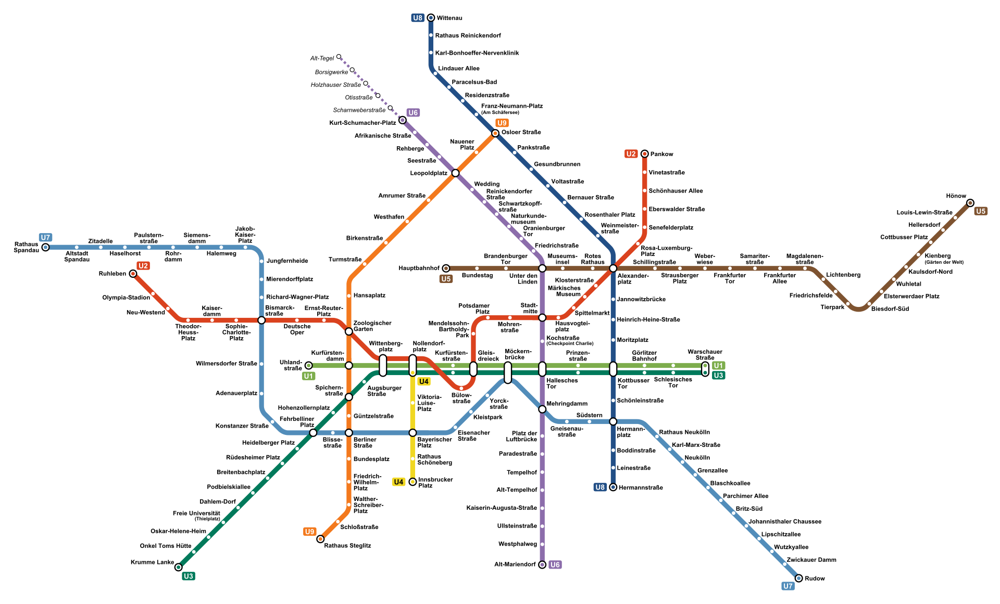

Linee Metro
Linee La metro di Berlino è formata da 9 linee, con delle parti sotterranee ed altre in superficie. Linea U1 (Verde): Inaugurata nel 1902, è una delle linee più antiche di Berlino, che attraversa la città da est ad ovest, dalla stazione di Uhlandstraße a Warschauer Straße. La linea effettua alcune fermate interessanti per i turisti, come Kurfürstendamm, dove si può vedere la Chiesa Kaiser Wilhelm, o Wittenbergplatz, che si trova vicino al famoso centro commerciale KaDeWe. Linea U2 (Rossa): È una delle linee della metro più antiche della città. Esegue un percorso interessante per i turisti, iniziando nella fermata di Ruhleben, ad ovest della città, per muoversi verso est, terminando a nord con la stazione di Pankow. La linea U2 realizza delle fermate in alcuni dei luoghi più importanti di Berlino, com’è il caso di Alexanderplatz e Potsdamer Platz. Linea U3 (Verde turchese): La linea U3 circola fra la stazione di Krumme Lanke, a sud della città, e Nollendorfplatz, nel centro di Berlino. Si tratta di una linea poco utile per i turisti, a meno che il loro hotel non si trovi in una delle sue fermate. Linea U4 (Gialla): Con meno di tre chilometri di lunghezza e solo cinque stazioni, la linea U4 è la più piccola di Berlino. Inaugurata nel 1910, esegue un percorso esiguo, che collega Nollendorfplatz a Innsbrucker Platz. Linea U5 (marrone): La linea U5 parte dalla zona est della città, dalla stazione di Hönow fino all'iconica Alexanderplatz. È una linea utile per raggiungere il noto quartiere di Friedrichshain, con la sua stazione di Frankfurter Tor da cui si può raggiungere a piedi Simon Dache Strasse, un buon posto per mangiare. Linea U55 (marrone): prolungamento della linea U5 con solo tre stazioni: da Hauptbahnhof a Brandenburger Tor passando per il Parlamento. Linea U6 (Viola): La linea U6 della metro circola dalla stazione Alt-Tegel, nel nordest, a Friedrichstraße, nel centro, e scende fino a sud, terminando il suo percorso nella stazione Alt-Mariendorf. Una delle fermate più importanti della linea si trova a Kochstraße, vicino a Checkpoint Charlie. Linea U7 (Celeste): È una delle linee più lunghe della metro di Berlino. Ha 40 fermate lungo più di 30 chilometri, durante i quali si percorre la città da nordest, nella stazione Rathaus Spandau, fino al sudest, con capolinea nella stazione di Rudow. Una delle fermate più trafficate della linea è Richard-Wagner-Platz, che si trova vicino al Palazzo Charlottenburg. Linea U8 (Blu): Percorre la città dalla stazione di Wittenau, situata a nord, a Hermannstraße verso sud. Linea U9 (Arancione): La linea U9 esegue 18 fermate lungo il percorso che va dalla stazione di Osloer Straße, a nord della città, a Rathaus Steglitz, situata a sud. Una delle fermate più emblematiche della linea è Kurfürstendamm, vicino alla chiesa Memorial Kaiser Wilhelm.
